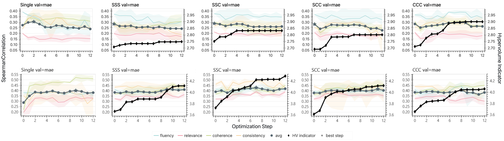

Abstract
Customizing an LLM judge to a specific problem or domain often involves optimizing its prompt across multiple evaluation criteria simultaneously. Textual gradient methods automate this for a single judge criterion, however they produce natural-language critiques, not numerical vectors. Thus, the conflict-resolution toolkit of multi-task learning (PCGrad, MGDA) does not apply to this multi-objective textual gradient setting. We extend TextGrad to the multi-objective setting and test four decomposition modes of textual gradient optimizers by varying how much cross-objective information the loss, gradient and optimizer LLMs share. We find the gradient's task-focus drops by 59% (9.0 to 3.7 out of 10) when the gradient LLM must provide feedback on multiple criteria jointly. Separately, we observe that naively combining single-objective optimized instructions into a single prompt degrades Spearman ρ from 0.305 to 0.220 (−0.085). These results identify two separable failure modes: optimization-time gradient dilution and inference-time instruction interference, which together constrain the design space for multi-objective judge optimization using textual feedback.
Experimental Setup
We evaluate on SummEval, which provides expert annotations for four separable summary-evaluation criteria: fluency, relevance, coherence, and consistency. Each optimization step has three stages where the criteria can interact: the loss LLM, the gradient LLM, and the optimizer LLM. We encode each mode with three letters: S means the stage processes each criterion separately; C means the stage processes all four criteria jointly.
The four multi-objective modes are: SSS (all stages separate), SSC (loss and gradient separate, optimizer combined), SCC (only loss separate, gradient and optimizer combined), and CCC (all stages combined). We also include a Single-Task baseline where each criterion receives its own independent optimization run. This baseline is not a deployable one-prompt judge, but it measures the ceiling we would hope to approach if multi-objective coupling caused no damage. All experiments use N=3 independent runs per configuration over 12 optimization steps.
Failure Mode 1: Gradient Dilution
The first failure happens during optimization. We measure each textual gradient for gradient specificity: how targeted its improvement suggestions are to a single criterion (scored 1–10 by an LLM evaluator). When the gradient LLM processes each task separately (modes Single, SSS, SSC), gradients are sharply focused, scoring a mean of 9.0 (±0.3). But when it must reconcile feedback from all four criteria in one call (modes SCC, CCC), specificity drops to 3.7 (±0.5), a 59% reduction with no overlap between the per-task and cross-task distributions.

The per-criterion breakdown reveals uneven dilution. Consistency is the most diluted: SCC scores 2.6 and CCC scores 2.4. Coherence retains more focus: SCC scores 4.8 and CCC scores 5.1. Joint gradients do not merely become uniformly worse; they become uneven, preserving generic writing-quality feedback while losing the criterion whose rubric is easiest to confuse with other dimensions.
This finding extends the rule-dilution hypothesis of CARO from the within-criterion to the cross-criterion setting. CARO shows that aggregating heterogeneous error modes in a single optimization step degrades rubric accuracy; we observe the analogous effect when multiple task gradients are combined in a single gradient call, degrading the per-task optimization signal.
Control Diagnostic: Feedback Adherence
A low-specificity gradient would not matter if the optimizer ignored it. To rule this out, we measure feedback adherence: whether the optimizer LLM incorporates the textual gradient's suggestions into the rewritten instruction. We score each rewrite on a 1–10 scale using Claude Sonnet 4.6 as the evaluator.
Adherence is uniformly high (7.8 to 8.8 on a 10-point scale) across all modes and validation settings. Single-Task achieves 8.70±0.47 (MAE) and 8.53±0.60 (no validation); SSS achieves 8.84±0.44 and 8.72±0.54; CCC achieves 7.90±1.62 and 8.01±1.28. The optimizer faithfully implements whatever gradient it receives, even when those suggestions are generic rather than criterion-specific.
This control localizes the failure: the ceiling on multi-objective judge prompt optimization is gradient quality, not optimizer compliance.
Optimization Stagnates
The downstream effect is stark. In 6 of 10 configurations, optimization never beats the initial generic prompt (“Rate from 1 to 5”). Only single-task optimization with MAE validation meaningfully improves (+0.031 Spearman). Without a validation gate, multi-task modes actively degrade: SSC drops from 0.283 to 0.184 by step 7. With the gate, trajectories flatten rather than climb: the gate prevents collapse but cannot manufacture signal from diluted gradients.

Per-task Spearman ρ over 12 optimization steps (mean of 3 runs, shaded bands show min–max). Top row: Qwen3 with MAE validation (left) and no validation (right). Bottom row: DeepSeek v4 with the same validation conditions. Without validation gating, performance degrades roughly as Single-Task > SSS > SSC > SCC > CCC. Under MAE validation, the pattern is non-monotonic: CCC slightly outperforms SSC, suggesting that full coupling may occasionally produce complementary gradients that survive the validation gate. A stronger backbone (DeepSeek) improves absolute scores but preserves the structural pattern.
Despite stagnation in Spearman, the hypervolume indicator (HVI) shows an increasing trend. For CCC, HVI grows continuously, indicating that the optimizer discovers diverse specialist prompts that expand the Pareto front, even when no single prompt dominates the initialization on all four tasks. This mirrors findings from multi-objective prompt optimization literature, where expanding the Pareto front comes at modest per-objective cost.
Failure Mode 2: Instruction Interference
Gradient dilution explains why the cross-task modes fail. But why do the per-task modes (SSS, SSC) also stagnate, when their gradients are sharp and their edits faithful? The answer lives at inference time, not optimization time.
We run an oracle experiment: for each criterion, we pick the single best instruction across all single-task runs, the one with the highest held-out Spearman for that task, then combine the four oracle-optimal instructions into one prompt. Even these individually-best instructions degrade when combined, falling from 0.305 to 0.220 average Spearman (−0.085), strictly worse than the generic baseline (0.284).
| Method | Fluency | Relevance | Coherence | Consistency | Avg ρ |
|---|---|---|---|---|---|
| Initial (generic) | 0.366 | 0.208 | 0.308 | 0.256 | 0.284 |
| Single-Task (best per criterion) | 0.350 | 0.168 | 0.338 | 0.363 | 0.305 |
| Cherry-pick (combined) | 0.303 | 0.257 | 0.215 | 0.105 | 0.220 |
The mechanism is instruction-length asymmetry. Optimization over-specifies some criteria (the fluency rubric expands to approximately 800 tokens with detailed scoring anchors) while leaving others under-specified (the relevance instruction remains at approximately 4 tokens of the initial prompt). Packed into a single prompt, verbose instructions receive disproportionate attention relative to brief ones at inference time. Individually good rubrics can hurt when combined, so interference cannot be fixed by better per-task optimization alone.
This result strengthens a finding from RRD, which shows that naive rubric construction degrades GPT-4o preference-judgment accuracy by 13 points on JudgeBench. RRD's result shows that bad rubrics hurt. Our result shows that individually good rubrics can hurt when combined, implying that instruction interference is not resolvable by improving per-task optimization alone.
What This Means for Custom LLM Judges
For practitioners customizing judges to domain-specific criteria, these results indicate that architectural changes are required before the multi-objective setting can work reliably. Addressing either failure mode alone is insufficient.
For gradient dilution: conflict-aware gradient resolution adapted from numerical multi-task learning (PCGrad, CAGrad) could address dilution if textual gradients can be meaningfully embedded and projected. A specificity-aware router could fall back to per-task gradient calls when multi-task specificity drops below a threshold, capturing CCC's hypervolume gains without losing task focus.
For instruction interference: separate judge calls per criterion eliminates interference but multiplies inference cost. Length-aware instruction synthesis that normalizes rubric length during optimization prevents verbose rubrics from dominating the attention budget. Next-token attention masking that exposes only the relevant criterion instruction during each output field eliminates interference at no cost.
The diagnostics we provide (gradient specificity and feedback adherence) give a way to measure both failure modes, so future work can evaluate mitigations against the same yardstick.
Future Work
Our findings open several concrete directions.
Statistically reliable LLM diagnostics with PPI. Our diagnostics are LLM-judged, introducing evaluator bias. Prediction-Powered Inference (PPI) combines a small human-judged set with a large LLM-judged set to produce provably unbiased estimates. This would let us report the specificity gap as a confidence interval and scale diagnostics to hundreds of runs without scaling human annotation linearly.
Synthetic task generation for aligned criteria. Rather than treat the four SummEval criteria as fixed, persona-driven synthesis at billion-person scale and instruction-data generation with controlled diversity can produce synthetic objectives that are complementary for optimization. If the synthesized tasks are mutually aligned by construction, the combined gradient should suffer less semantic drift, raising gradient focus and potentially mitigating both failure modes at their source.
Multi-objective critics for agentic workflows. Multi-objective judge prompts could serve as critics in agentic LLM systems, where a critic must track several quality dimensions of tool-use trajectories at once. Applying our optimization pipeline to such critics raises an open question: do gradient dilution and instruction interference still emerge when criteria are tool-grounded and partially verifiable, or does verifiability yield more robust gradients?
Limitations
Our experiments are scoped to SummEval as it provides expert human annotations on four clearly separable criteria. Other benchmarks would validate our identified failure modes: BRIGHTER tests whether dilution scales with task count and crosses language boundaries; ASAP++ (per-trait essay-grading rubrics) tests whether the SCC to CCC gradient specificity cliff transfers beyond summarization; EMSCAD and GitBugs test heterogeneous classification criteria rather than ordinal quality scales.
Our sample size (N=3 runs) limits statistical power, and we restrict our claims to effect sizes that are robust at this sample size: the 59% specificity drop and the -0.085 cherry-pick degradation. Gradient specificity and feedback adherence are scored by an LLM evaluator, which introduces a potential confound. Other prompt optimization paradigms may exhibit different multi-task dynamics, though our diagnostics are algorithm-agnostic and can be applied to any textual gradient approach.
BibTeX
@misc{darshan2026gradientscollidefailuremodes,
title={When Gradients Collide: Failure Modes of Multi-Objective Prompt Optimization for LLM Judges},
author={Parth Darshan and Abhishek Divekar},
year={2026},
eprint={2605.26046},
archivePrefix={arXiv},
primaryClass={cs.CL},
url={https://arxiv.org/abs/2605.26046},
}